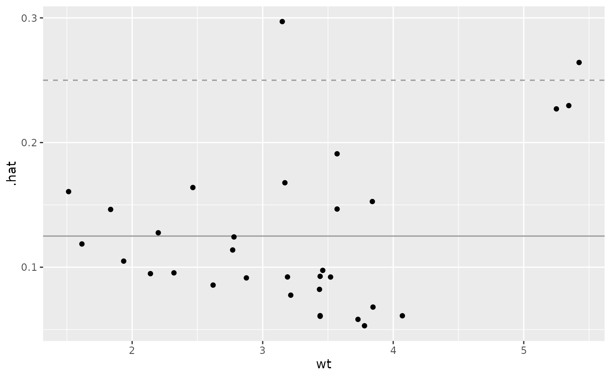

A function to display stats::influence's hat information against a given explanatory variable.
Usage
ggally_nostic_hat(
data,
mapping,
...,
linePosition = 2 * sum(eval_data_col(data, mapping$y))/nrow(data),
lineColor = brew_colors("grey"),
lineSize = 0.5,
lineAlpha = 1,
lineType = 2,
avgLinePosition = sum(eval_data_col(data, mapping$y))/nrow(data),
avgLineColor = brew_colors("grey"),
avgLineSize = lineSize,
avgLineAlpha = lineAlpha,
avgLineType = 1
)Arguments
- data, mapping, ...
supplied directly to
ggally_nostic_line- linePosition, lineColor, lineSize, lineAlpha, lineType
parameters supplied to
ggplot2::geom_line()for the cutoff line- avgLinePosition, avgLineColor, avgLineSize, avgLineAlpha, avgLineType
parameters supplied to
ggplot2::geom_line()for the average line
Details
As stated in stats::influence() documentation:
hat: a vector containing the diagonal of the 'hat' matrix.
The diagonal elements of the 'hat' matrix describe the influence each response value has on the fitted value for that same observation.
A suggested "cutoff" line is added to the plot at a height of 2 * p / n and an expected line at a height of p / n.
If either linePosition or avgLinePosition is NULL, the respective line will not be drawn.
Examples
# Small function to display plots only if it's interactive
p_ <- GGally::print_if_interactive
dt <- broomify(stats::lm(mpg ~ wt + qsec + am, data = mtcars))
p_(ggally_nostic_hat(dt, ggplot2::aes(wt, .hat)))
